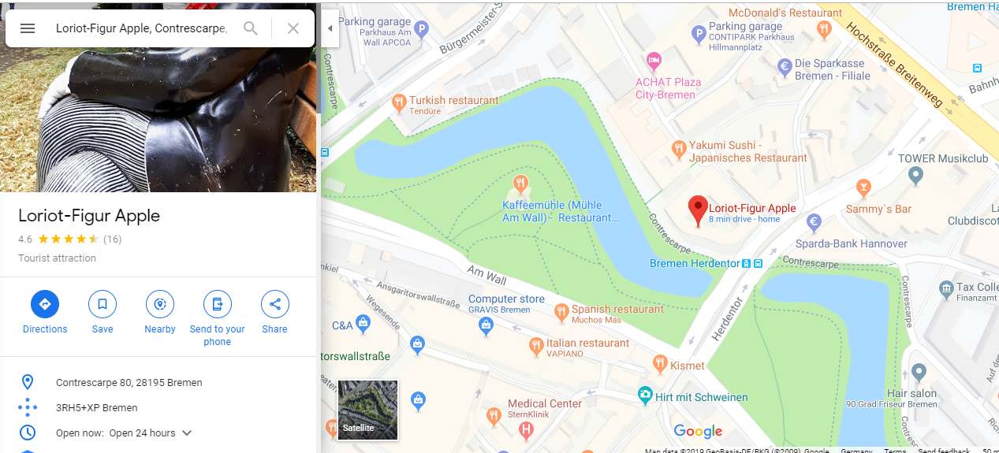
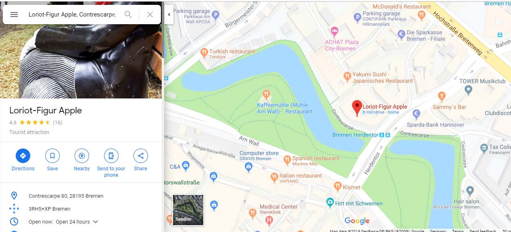
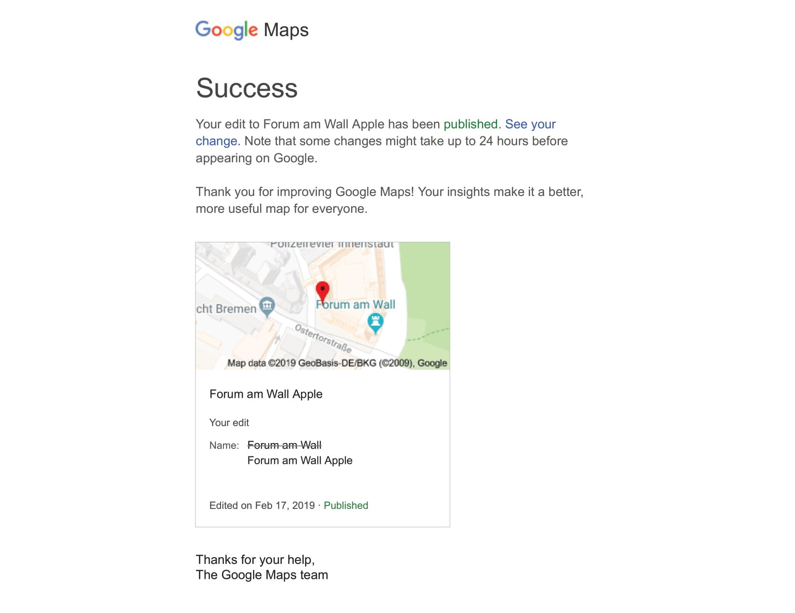
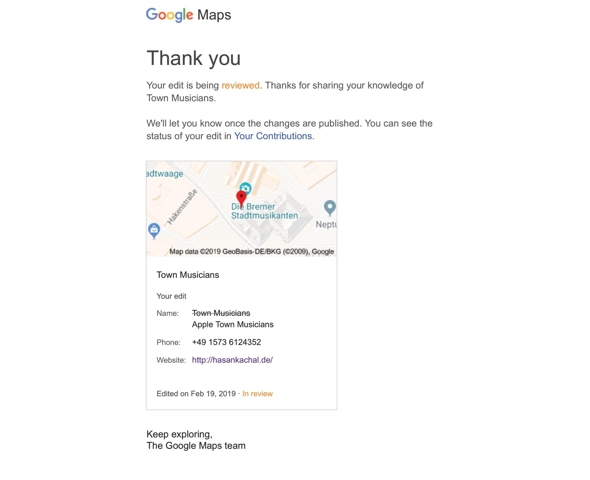
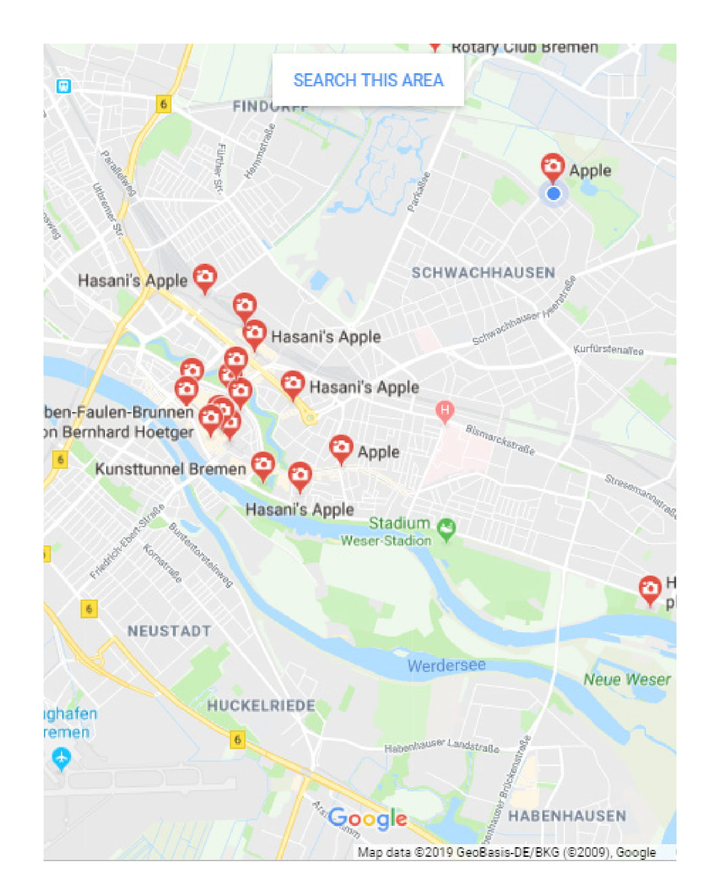
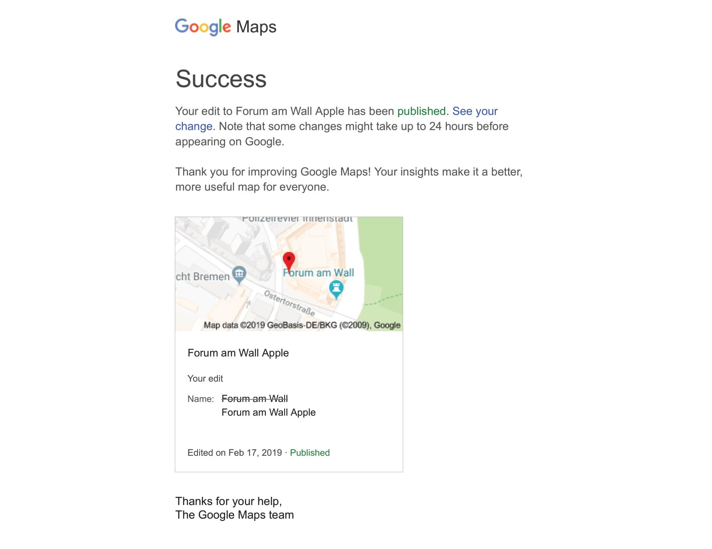
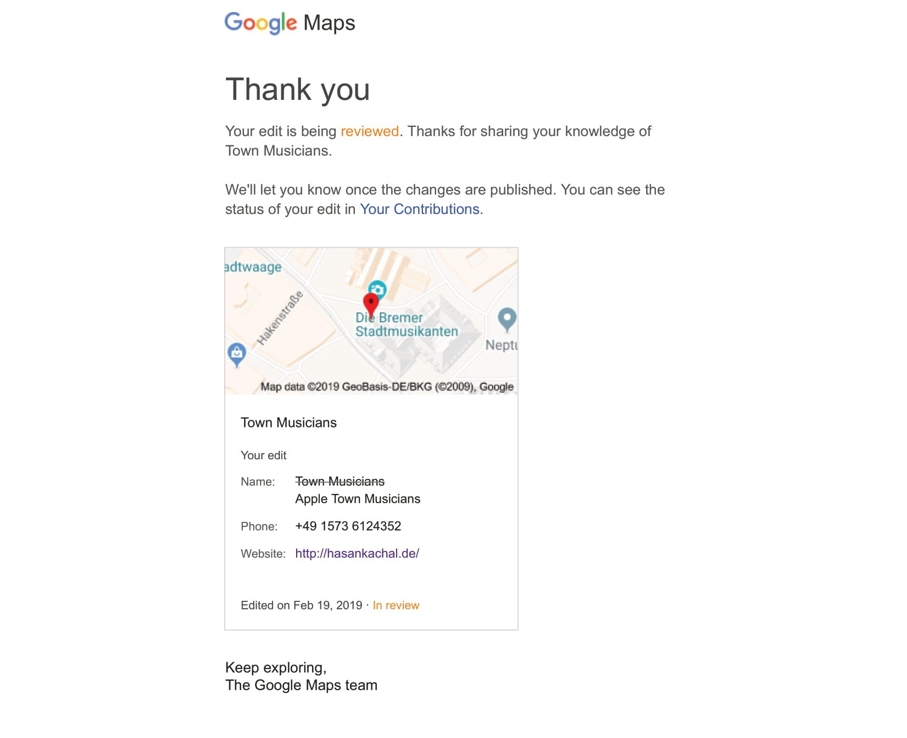
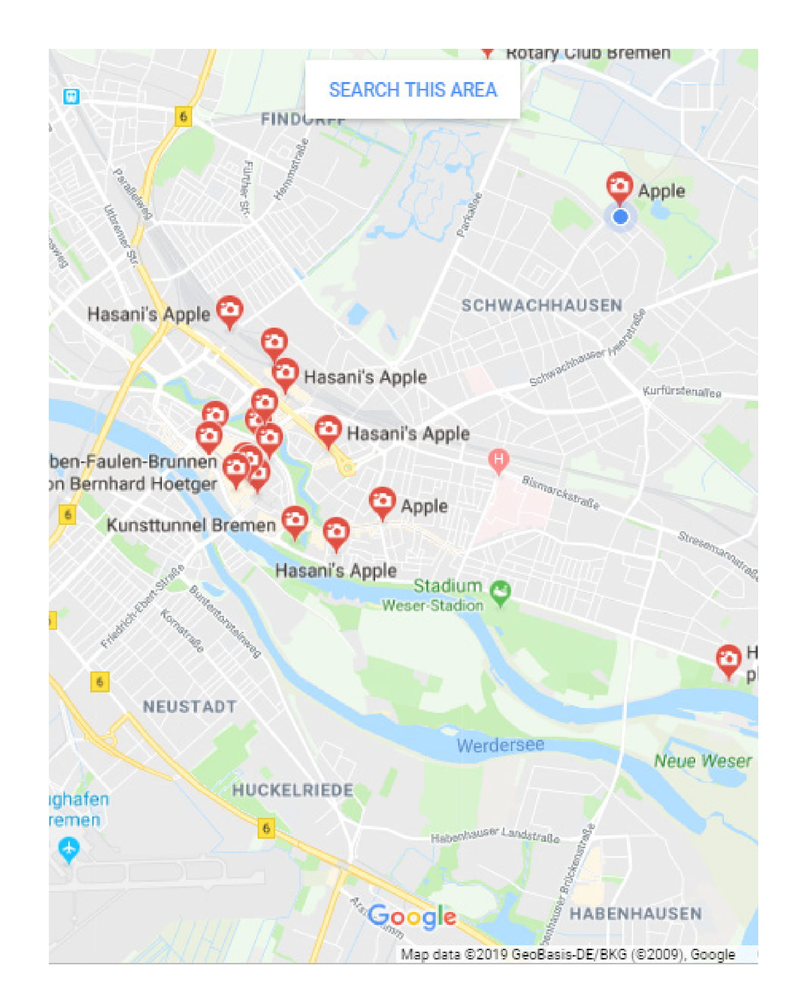

Hasan Kachal
Hasan Kachal, a symbolic lazy character from an Iranian Folk tale, who spends most of his time laying down in bed. As a solution his mother formulates a plan to trick him out of the house by laying a trail of apples that forces him to experience the outside world. In this digital contemporary version, he is the Flâneur, wandering around the town with apples. He initially explores the city as a tourist to have a clear picture of the main sites, proceeding to physically leave an apple in situ and tagging them in Google Maps. Through this action he manages to modify the online experience of public space. His selection of tourist attractions in Bremen now include “apple” in their identity, showing up in queries and feeding from the interactions/ratings/ commments of users. In this journey, Hasan Kachal becomes a virtual urban hacktivist. The apples turn into imaginary places and tools against hierarchical regulations imposed by Google Maps. Through the process of sliding the rules back and forth he defines an imaginary online geography. The following is a series of documentation from the verification process.
Curated by
Victor Artiga Rodriguez


 

 




